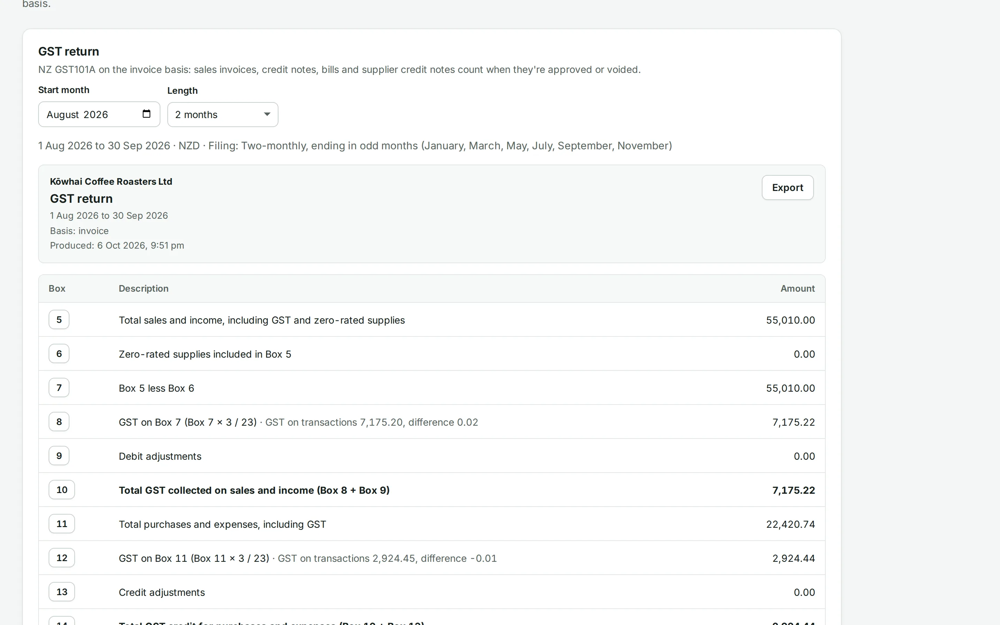
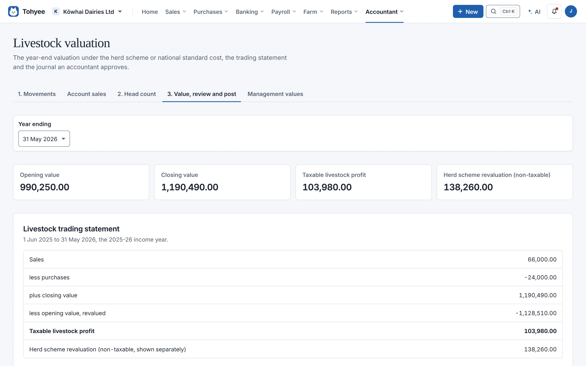
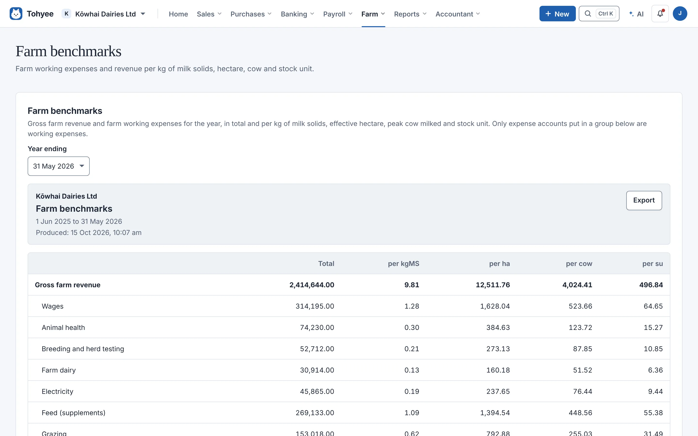
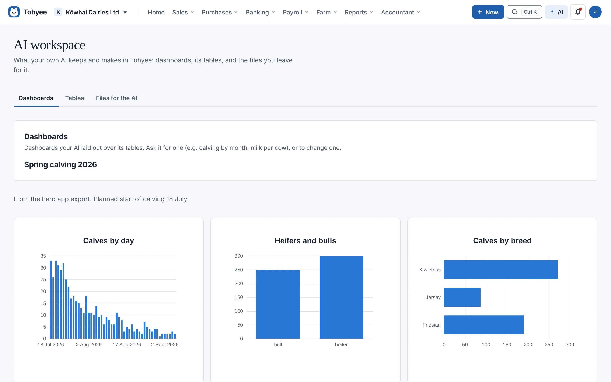
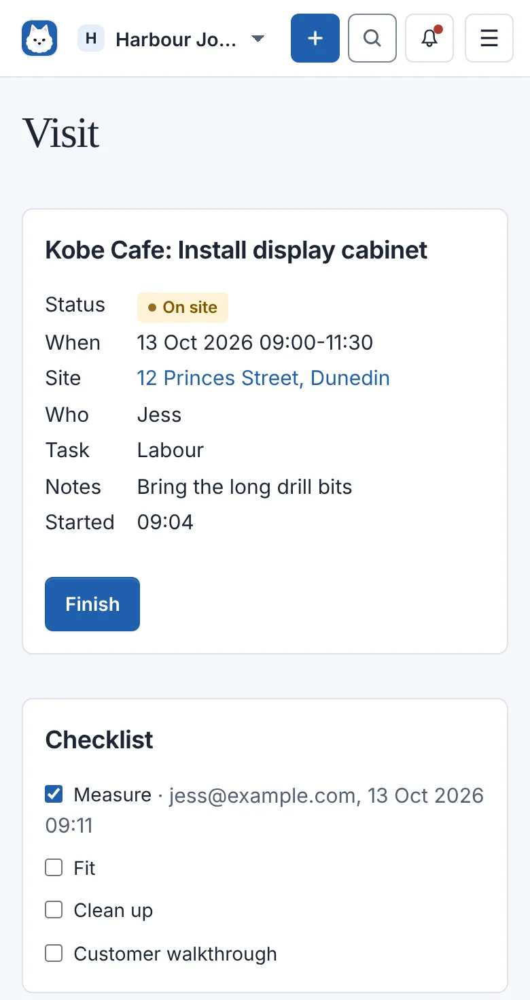
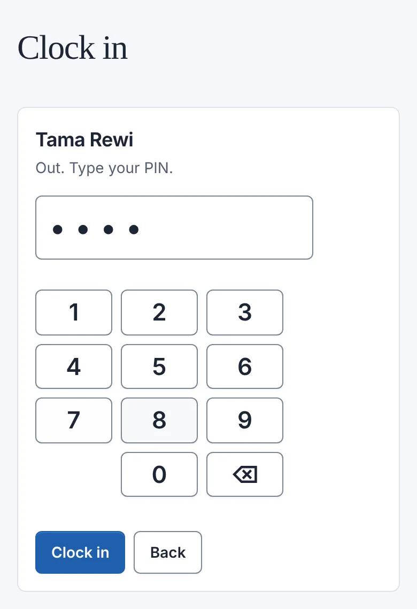
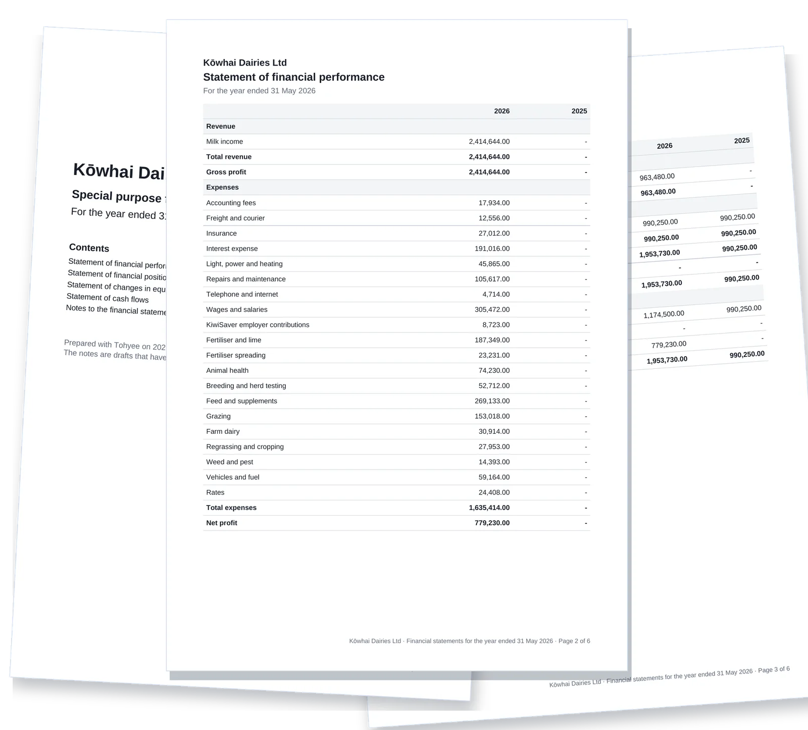

Free, open-source accounting made in New Zealand. Invoices, GST, payroll, jobs, rosters, farms and livestock,
kept on a computer you control and open in everyone's browser.
No subscription and no per-user fees. Licensed under the GNU AGPL v3.
Worked example JV7Invoice from a job
Kobe Cafe's invoice for installing a display cabinet
Labour, 2 h 16 min at 90.00
204.00
Cabinet hinges, 4 at 12.00
48.00
GST at 15%
37.80
Total to Kobe Cafe
289.80
When it's approved, the hinges leave stock at their cost
The stock journal on approval
Account
Debit
Credit
5000 Cost of sales
24.00
1400 Stock
24.00
One of more than a thousand worked examples. Each is agreed before it's built and checked by automated tests
on every change.
Read them all

Real screens with a made-up business, Kōwhai Coffee Roasters.
Made for the way New Zealand works
Turn on the parts your organisation needs. Everything shares one set of books.
Shops and makers
Sell in person and online, keep stock right, and roster the shop.
Shopify and WooCommerce sales, refunds and payouts
Stock at average cost, with stocktakes and transfers
Rosters costed against a weekly budget
Staff clock in with a PIN on the shop's tablet
Trades and services
Book the visit, do the work on your phone, invoice it the same day.
Jobs with a site, a calendar and each person's visits
Start and Finish fill in the hours; checklists, photos and a signature
Materials onto the invoice, out of stock when it's approved
Service reminders when the next visit is due
Farms
Paddocks, fertiliser and stock, in the same books as the milk cheque.
Paddock maps from GeoJSON, Google Earth or a shapefile
Fertiliser plans against what was bought and spread
Herd scheme and NSC values for cattle, sheep, deer and goats
Benchmarks per kgMS, hectare, cow and stock unit
Accountants and bookkeepers
Many organisations on one server, each in its own database.
GST returns with the documents behind every box
Month-end and year-end close with a checklist
Payroll with PAYE, KiwiSaver, leave and payday filing files
Consolidation across organisations and currencies
New in 0.8.0
From the paddock to the year-end
Draw or import your paddocks, plan the fertiliser, count the stock and value it for tax. Your own AI can read
the herd app's export and turn it into a dashboard, without touching the books.



Real screens with a made-up dairy farm, Kōwhai Dairies.
Paddocks and fertiliser
Import paddock shapes or draw them, with LINZ aerial photos behind. Plan nitrogen by paddock, link the
bills, and see planned against applied in kg N/ha and dollars.
Livestock for tax
Movements and head counts that reconcile, herd scheme and national standard cost values, agent account
sales, and the year-end journal with its workings.
Your AI, on a short lead
Leave it the herd app's spreadsheet and it builds its own tables and dashboards. Movements it finds are
suggestions until you accept them.
On the job and at the counter
Tohyee works in a phone's browser, so there's nothing to install for your team. A visit shows the site, the
notes and the checklist. The shop tablet clocks people in with a PIN, and their hours land on their
timesheet for approval.
The tablet never signs in to your books. It holds its own key, and that key can only clock people in and
out.

A visit, part-way through

Clocking in at the shop

Year-end, in one go
Special purpose financial statements with last year beside them and your own notes, as one PDF. The
accountant pack puts the trial balance, ledger and bank reconciliations in a single ZIP.
Statements of financial performance, position, changes in equity and cash flows
Draft notes to start from, marked as drafts until you save them
Recode a posted line with a reason instead of voiding the invoice
Accounting you can check
New accounting apps are racing to do the books for you. Tohyee helps too, and it shows its working, so a person
stays in charge of what goes into the books.
Suggestions wait for you
Bank matches, bank rules, bills read from your inbox and drafts from an AI assistant are suggestions. They
reach the books when someone says OK.
The database says no
PostgreSQL itself refuses a journal that doesn't balance and any edit to posted history. Mistakes are
voided or reversed, so the trail stays complete.
Written down before it's built
Every accounting rule starts as a worked example with real numbers. More than 2,000 automated tests run
them against a real database before any change is accepted.
AI on a short lead
AI is optional and uses a key you make. Keys can only look until you allow more, and no AI tool can delete,
void or reopen anything.
Everything in it
All of this is in version 0.8.0. Anything newer is on the main branch; see
what's new.
Tohyee runs on your own computer or server, like a media server at home. Your team and your accountant
open it in their browsers, each with their own login and role.
Each organisation has its own PostgreSQL database, so it can be backed up, restored or moved on its own.
Backups run every night, encrypted with a key you keep somewhere else.
Remote access through your own Cloudflare domain or Tailscale, with two-step sign-in.
Use the release's Docker bundle on your own machine or server. Keep the data and backups on persistent
storage, and set your secrets before the first start.
The latest installer is
version 0.8.0. Anything newer is on
the main branch and will be in the next release.
Checked 15 October 2026.
Version 0.8.0
Farming with paddocks, fertiliser plans and soil tests; livestock for tax; jobs, rosters and clocking
in; a bigger CRM; year-end financial statements; and your AI on the farm.
Jobs, rosters and clocking in
Jobs with visits, checklists and materials; rosters costed against a budget; staff clocking in on a
shared tablet, straight onto their timesheets.
Livestock
Head counts, herd scheme and NSC values, agent account sales and management values for cattle, sheep,
deer and goats.
A bigger CRM
Leads and web forms, sales teams, follow-ups, campaigns, team forecasts and quotes from deals.
Version 0.7.0
Bank feeds from SimpleFIN, Stripe, PayPal and Wise, bank rules with splits, a bills inbox, cash flow
forecasts and Ctrl K search.
Questions people ask
Is it really free?
Yes. Tohyee is open source under the GNU AGPL v3, with no subscription or per-user fee. Your hosting, bank
feed, payment provider or other connected services may charge for their own part.
Where does my data live?
On the computer or server you choose, with a separate database for each organisation. If you connect a
bank feed, payment provider, remote access or AI assistant, that provider sees what it needs to do its
job.
Can my team and accountant use it from elsewhere?
Yes. Set up remote access with your own Cloudflare domain or Tailscale Funnel, then give each person their
own login and role. Server settings only open on the server itself.
Does it file with Inland Revenue?
Not directly. Tohyee works out the GST return with an audit report and makes payroll payday filing files.
You check them and submit them to IRD yourself.
Does livestock cover every NZ tax situation?
No. Pigs, associated-person transfers, long-term bailments and a few other cases aren't supported yet, and
Tohyee refuses them rather than guessing. Check the scope with your accountant before relying on a
valuation.
What if I need to restore my books?
Restore an organisation from a nightly backup as a new copy, then check it before switching over. Keep
backups off the server, and keep the encryption key separately: without it the backups can't be opened.
Tohyee is early and built in the open. Try a test organisation first, check reports and returns before relying
on them, and keep your own backups. It comes without warranty under its
licence and isn't endorsed by Inland
Revenue. Report security concerns through the
security policy.